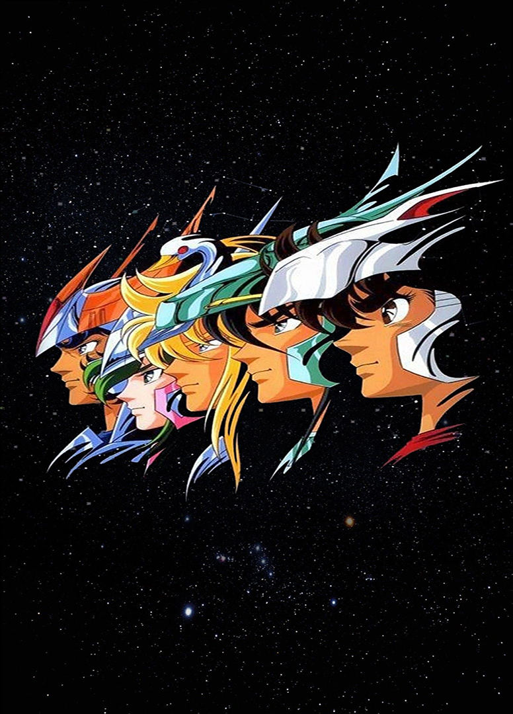
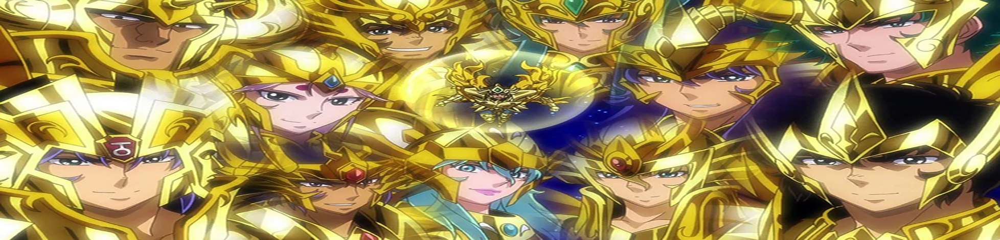
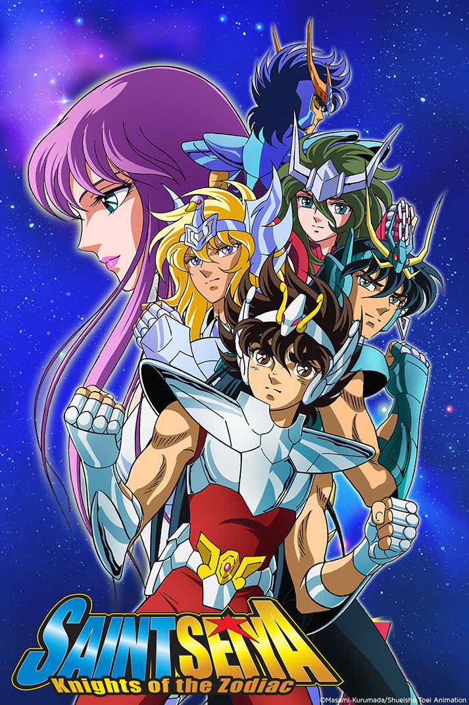
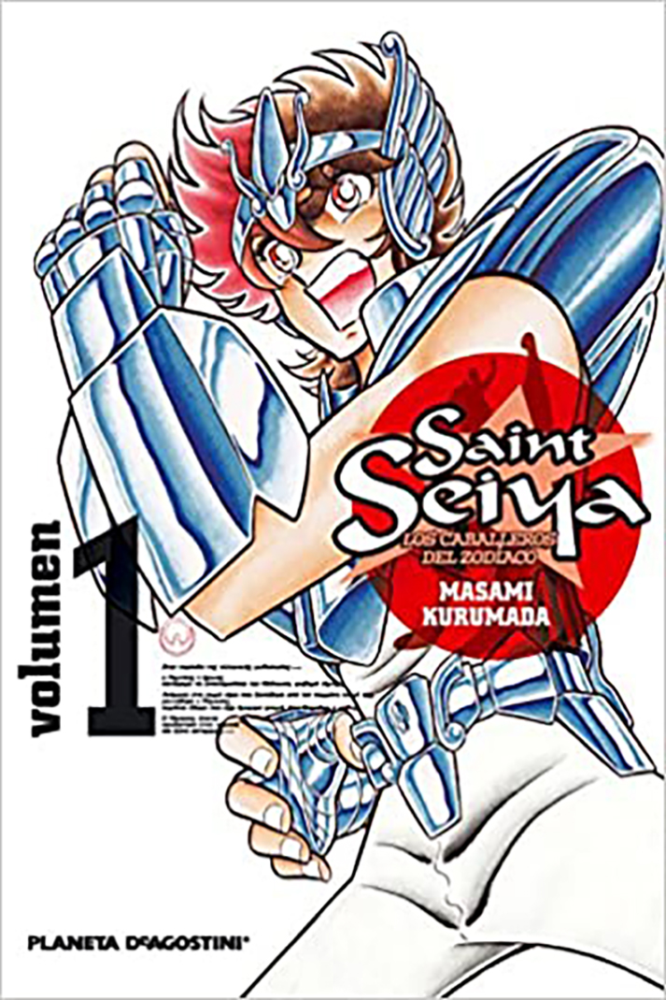
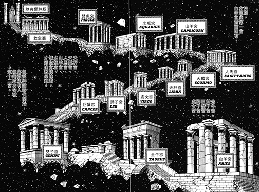

Te mostramos los datos principales de la franquicia, con curiosidades, anécdotas y pequeñas sorpresas. Para que no te pierdas los detalles principales de la serie y lo que rodea a su universo.
Una serie del calibre de Los caballeros del zodíaco ha dado pie a múltiples teorías, artículos, opiniones, revisiones, etcétera a lo largo de los años. Con motivo del anuncio del remake de la
serie a cargo de Netflix, en este reportaje vamos a repasar los datos principales de la franquicia, con curiosidades, anécdotas y pequeñas sorpresas. Para que no te pierdas los detalles principales de la serie y su universo.
Todo partió de la mente de Masami Kurumada, creador de la idea original de Saint Seiya en 1986. El manga realizado por él tuvo una repercusión tan grande que Kurumada lo dibujó y amplió hasta 1990.
De forma simultánea surgió la serie de televisión y continuaron las películas, videojuegos y todo un mundo de merchandising basado en los personajes. Todo ello convirtió a Los caballeros del zodíaco en una franquicia mundial.
El nacimiento de Atenea, reencarnada en un pequeño bebé trae como consecuencia un auge de las fuerzas del mal que buscan destruir la Tierra,
de la que Atenea es protectora.El caballero del zodíaco de Sagitario, sabiendo que la pequeña es la única capaz de salvar al universo en el
futuro, entrega a la niña y su propia armadura de caballero a un turista japonés, justo antes de morir. Este hombre, Mitsumasa Kido, es quien
dará lugar a la nueva hornada de guerreros listos para proteger a la pequeña años después. Todos son hijos suyos, llegando al centenar,
repartidos por todo el mundo. Entre ellos están los posibles candidatos a recibir la armadura de bronce y ser dignos de proteger
a la diosa. Solo unos pocos lo consiguen.
Mucho de lo que rodea a los caballeros del zodíaco bebe de los elementos mitológicos griegos. Todo parte del mito de la diosa Atenea (hija de Zeus y diosa de la sabiduría y las artes),
a cuya reencarnación los jóvenes caballeros están destinados a proteger. Seiya y sus compañeros y amigos (Shiryu, Hyoga, Shun) reciben poderes gracias a varias constelaciones: pegaso,
dragón, cisne, andrómeda... Por su parte, Ikki, hermano de Shun y también miembro del grupo y apoyo de los muchachos en momentos clave, conseguiría por su cuenta ser nombrado caballero
del Fénix.

Aunque su popularidad llegó con Telecinco, que fue la que adquirió los derechos de emisión en el año 1993 y la volvió a adquirir en 2006
(emitiendo la serie al completo en ambas ocasiones)fue la cadena pública TVE quien apostó por la serie en primers lugar en el lejano año
de 1991. Sin embargo, la fallida hora de emisión elegida, los domingos por la mañana, no ayudó a su auge y tras 24 episodios emitidos
en TVE 1, se probó fortuna en TVE 2 los sábados. Tampoco funcionó. Al final en 1993 fue la citada Telecinco quién apostó fuerte por ella. En Japón se emitió desde
el principio a través de la cadena TV Asahi entre 1986 y 1989.


Existen oficialmente 4 sagas de la serie, que se desarrollaron a lo largo de 114 episodios animados para TV. Los bloques temáticos son los siguientes:
El Torneo galáctico:
Formando a los caballeros de bronce (Capítulos 1-40).
La saga del Santuario:
Con las doce casas del Zodíaco (Capítulos 41-73).
En ella se basa la película.
La saga de Asgard:
Sobre el anillo de los Nibelungos y los guerreros de la diosa Hilda
(Capítulos 74-99).
La saga de Poseidón:
Ante el todopoderoso Dios del mar, divinidad griega, y sus siete
generales (Capítulos 100-114).
